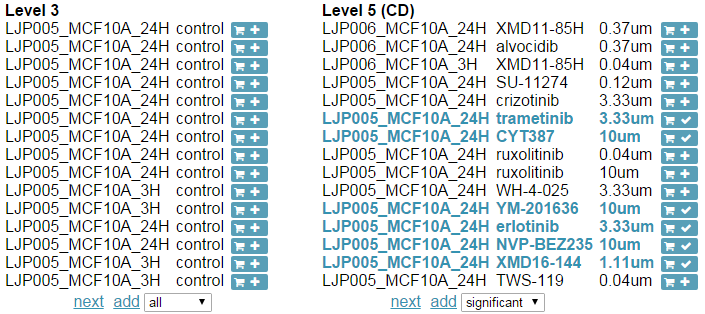

Lich is a web app that searches for LINCS L1000 gene expression profiles and signatures that match user's input parameters. It also features the functionality to download selected gene expression profiles or signatures in search results as tsv files in a zipped folder. Lich consists of two views: the search view and the checkout view.
Search View: This view will show up after user inputs some parameters in the search bar and clicks the search button. It is divided into two sections: the Level 3 section and the Level 5 section. LINCS L1000 data have multiple levels depending on how much preprocessing has been done on the data. The level 3 data are normalized gene expression profiles. The level 5 data are differential expression signatures computed from level 3 replicates. The level 5 signatures in Lich were computed using characteristic direction (CD) method and the details of this method can be found here. The Level 3 and the Level 5 sections display matched entries at corresponding levels.
checkout View: If a profile or signature is checked in the search view, a checkout button will appear at the top right corner. Clicking on the button will bring up the checkout view in place of the search view. There is a download button at the top of the checkout view and clicking on that button will download the selected gene expression profiles and signatures as tsv files in a zipped folder. User can remove any selected entries to fine-tune the selection.